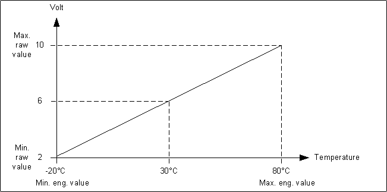

Setting How Property Values Display
In the Object Configurator tab, you can configure how the values of properties are displayed.
Value Conversion
- A data point is available in System Browser. Value conversion is only available for GMS real, float, uint, int, GMS uint and GMS int properties which display a value from a field device. It cannot, for example, be used for properties that are only available on Desigo CC .
- The driver of the network must be running. Otherwise, in the Value Conversion expander, the Valid check box displays a question mark symbol.
- Select Project > [field Networks] > [network] > Hardware > […] > [data point].
- Select the Object Configurator tab.
- In the Properties expander, select the desired property.
- In the Value Conversion expander, select the Valid check box.
- Enter values into the following fields:
- Min raw value: the lower end of your raw value scale
- Max raw value: the upper end of your raw value scale
- Min eng. value: the lower end of your engineering value scale
- Max eng. value: the upper end of your engineering value scale
NOTE: Value conversion is applied bidirectionally and applies to incoming as well as outgoing values (commanding).
- In the Operation tab, the property displays the engineering value of the current reading.
Example

If you configure the following values: Min raw value: 2, Max raw value: 10, Min eng. value: -50, Max eng. value: 50, a value of 6 on the field device will be displayed as 0 in Desigo CC.

- Value conversion is only available for properties originating in drivers. It is not available for SNMP.
- The procedure is also not recommended for BACnet integration. Conversion does not work for commands, such as BACnet priority-based value commanding.
Value Scale Units
You can set units to convert the measured input value into a readable display value. For example, a measured value of 2000000 Watt can be displayed as 2000 kW or 2 MW.
- Select Project > [field networks] > [network] > Hardware > […] > [data point].
- In the Object Configurator tab, open the Details expander.
- In the Value Attributes section, do the following:
a. From the Unit text group drop-down list, select TxG_EngineeringUnits.
b. From the Unit drop-down list, select the desired unit (for example, W).
c. From the Scaled unit drop-down list, select the unit you want to convert into (for example, kW). - In the Value Attributes section, do the following:
a. In the Min field, enter the unconverted value.
b. In the Max field, enter the unconverted value.
NOTE: The minimum and maximum values are automatically converted for applications which use those values.
- The measured value displays as a converted unit value in the application.
Value conversion is only available for GMS real, GMS uint and GMS int properties which display a value from a field device.
Value Smoothing
Smoothing can be used to reduce volume of data stored in the system. Value smoothing is mainly used to optimize systems where data is acquired via polling, for example, Modbus integrations.
- Select Project > Field Networks > [network] > Hardware > […] > [data point].
- Click the Object Configurator tab and open the Properties expander.
- Select, for example, the Present_Value property.
- In the Smoothing expander, select the Valid check box.
- From the drop-down list, select one of the following smoothing types:
- Value
a. Enter a deadband.
b. From the drop-down list, select one of the following:
- unit for absolute deadband
OR
- [%] for relative deadband. - Time
a. Enter a time interval. - Value AND time
a. Enter a time interval.
b. Enter a deadband.
c. From the drop-down list, select one of the following:
- unit for absolute deadband
OR
- [%] for relative deadband. - Value OR time
a. Enter a time interval.
b. Enter a deadband.
c. From the drop-down list, select one of the following:
- unit for absolute deadband
OR
- [%] for relative deadband. - Old/new
- Old/new AND time
a. Enter a time interval. - Old/new OR time
a. Enter a time interval. - Click Save
 .
.
Smoothing is not recommended for BACnet integrations because the BACnet driver has an integrated smoothing function.